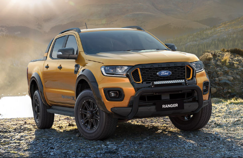
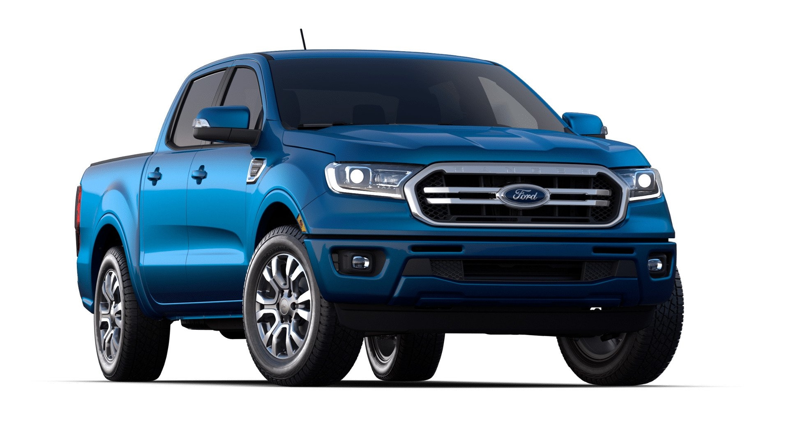
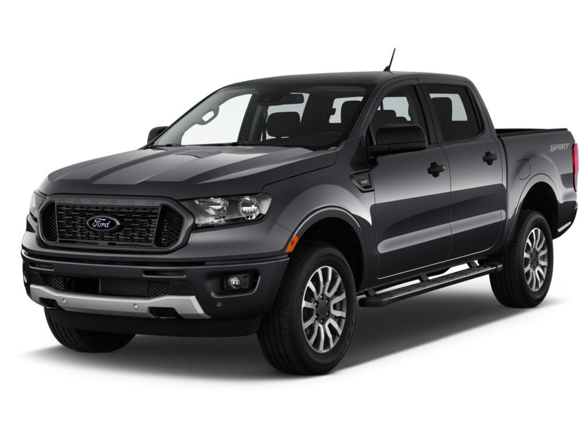

The Sport Package is largely a styling upgrade for the XL range in both single,SuperCab and Double Cab arrangements, with your choice of 4x2 0r 4x4, manual or automatic. Immediately distinguishable is the gloss black front grille. It does away with the chrome spars and grille surround and replaces it with a stylish gloss black,making it resemble the likes of the Thunder,Wildtrak,FX4 and Raptor,only with a regular Ford blue oval and devoid of the mustang-like nostrils.
The grille is complemented by the black alloys wheels which see the standard 16-inch wheels bumped up an inch to meat 17-inch items,shod with 265/65R17 dual-purpose tyres. This does increase the road noise somewhat,but its a small price to pay for the all-purpose capabilities that the Sport offers. Down the side,optional black side steps make a lightig and existing the Ranger Sport considerably easier,especially for ladies and those of us with shorter legs. This is an optional extra that costs an additional R5 050. The back and receives a black rear bumper and a black sports bar to complete the look. When paired with a light colour such as our silver Double Cab,the contrast is appealing and the overall package does indeed appear sportly.
The Ford Ranger 2.2TDCi double cab 4x4 XL Sport auto will set you back R573 800 before you've selected the optional extras of the infotainment system and the step sills,but this makes it considerably cheaper than the FX4 and indeed, the wildtrak.The XL Sport is sold with a 4-year/ 120 000km comprehensive warranty,three-year/unlimited distance roadside assistance and five-year/unlimited km corrosion warranty. A six-year/90 000km service plan is included for additional peace of mind.
  